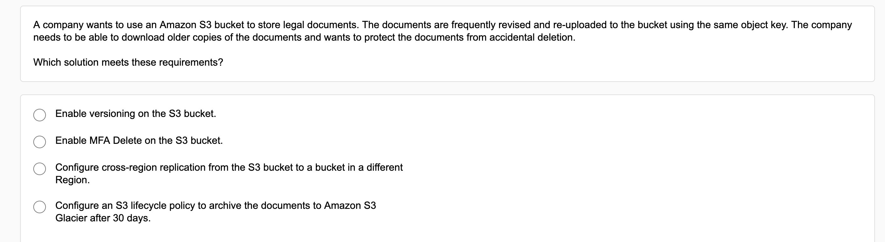
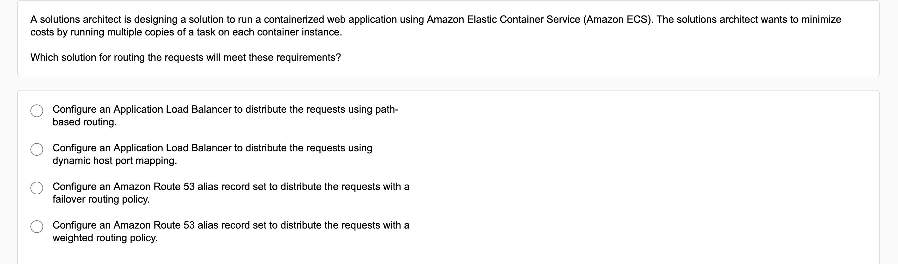
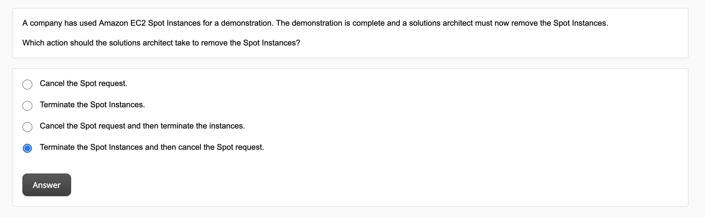
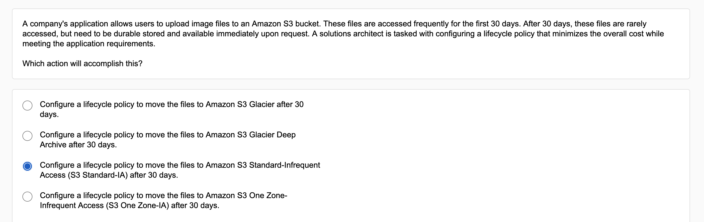
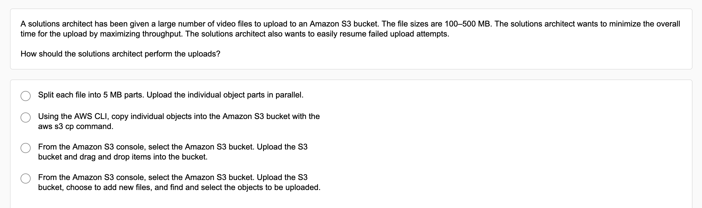
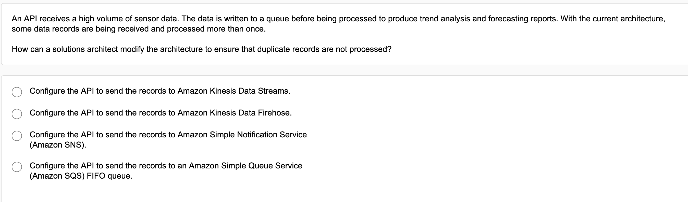
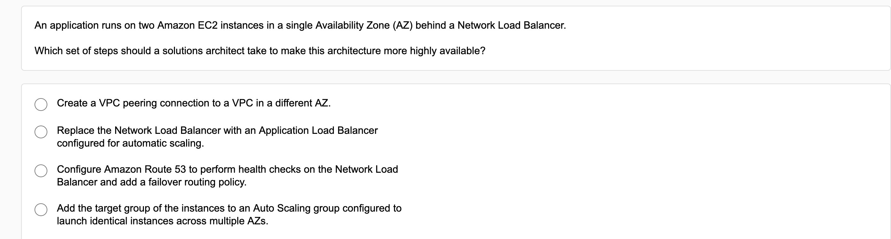

AWS Aurora Read Replica Failover
- Today we are making Aurora even more flexible by giving you control over the failover priority of each read replica.
- Each read replica is now associated with a priority tier (0-15).
- In the event of a failover, Amazon RDS will promote the read replica that has the highest priority (the lowest numbered tier).
- If two or more replicas have the same priority, RDS will promote the one that is the same size as the previous primary instance.
Cancelling Spot instance request
If you no longer want your Spot Instance request, you can cancel it. You can only cancel Spot Instance requests that are open, active, or disabled.
- Your Spot Instance request is open when your request has not yet been fulfilled and no instances have been launched.
- Your Spot Instance request is active when your request has been fulfilled and Spot Instances have launched as a result.
- Your Spot Instance request is disabled when you stop your Spot Instance.
If your Spot Instance request is active and has an associated running Spot Instance, canceling the request does not terminate the instance.
If your Spot Instance request is active and has an associated running Spot Instance, or your Spot Instance request is disabled and has an associated stopped Spot Instance, canceling the request does not terminate the instance; you must terminate the running Spot Instance manually.
If you terminate a running or stopped Spot Instance that was launched by a persistent Spot request, the Spot request returns to the open state so that a new Spot Instance can be launched. To cancel a persistent Spot request and terminate its Spot Instances, you must cancel the Spot request first and then terminate the Spot Instances. Otherwise, the persistent Spot request can launch a new instance.
Stop/Start spot instance
The feature of stopping a persistent is available for persistent Spot requests.
- You will not be charged for instance usage while your instance is stopped.
- EBS volume storage is charged at standard rates.
Upon restart, the EBS root device is restored from its prior state, previously attached data volumes are reattached, and the instance retains its instance ID.
Spot Instance interruptions
You can specify that Amazon EC2 should do one of the following when it interrupts a Spot Instance:
- Stop the Spot Instance
- Hibernate the Spot Instance
- Terminate the Spot Instance
The default is to terminate Spot Instances when they are interrupted. To change the interruption behavior, see Specifying the interruption behavior.
AWS Active Directory
AWS Microsoft AD (Standard Edition) offers you a highly available and cost-effective primary directory in the AWS Cloud that you can use to manage users, groups, and computers.
1

Data transfer cost
Data transferred between EC2 instances or containers, or Elastic Network Interfaces in the same availability zone and same VPC via public or Elastic IPv4 addresses are charged at $0.01 per GB for egress traffic and $0.01 per GB for ingress traffic.
Data transferred between EC2 instances or containers, or Elastic Network Interfaces in the same availability zone and same VPC over private IPv4 or IPv6 addresses are free.


Free transfer in: Internet -> AWS regions
Data transfer into all AWS regions from the Internet is free.
Charged transfer out: AWS regions -> Internet
Data transfer out to the Internet from all AWS regions is billed at region-specific, tiered data transfer rates.
Charged across regions: AWS Region -> Another AWS Region
Data transfer out from the local AWS region to another AWS region is charged at source region-specific data transfer rates. These costs are typically labeled as InterRegion Inbound or InterRegion Outbound transfer type in the monthly AWS bills.
Data transfer via: On site -> AWS Region free, AWS->site charged
AWS Direct Connect is an AWS network service that provides an alternative to using the Internet to connect customer’s on-premise sites to AWS. Customers connect their pre-existing data center or office network to AWS via an AWS Direct Connect location.
Data transfer into AWS regions through AWS Direct Connect locations is free.
Data transfer out of AWS regions through AWS Direct Connect is charged.

Services with free transfer within same region
Data transferred between:
- Amazon S3, Amazon Glacier,
- Amazon DynamoDB,
- Amazon SES, Amazon SQS,
- Amazon Kinesis,
- Amazon ECR,
- Amazon SNS or
- Amazon SimpleDB and
- Amazon EC2 instances
in the same AWS Region is free.
Data transferred “in” to and “out” from Amazon Classic and Application Elastic Load Balancers using private IP addresses, between EC2 instances and the load balancer in the same AWS Region is free.
Services with a charge across availability zones
Data transferred “in” to and “out” from
- Amazon EC2,
- Amazon RDS,
- Amazon Redshift,
- Amazon DynamoDB Accelerator (DAX), and
- Amazon ElastiCache instances or
- Elastic Network Interfaces
across Availability Zones or VPC Peering connections in the same AWS Region is charged at $0.01/GB in each direction.
Data transferred between
- Amazon EC2,
- Amazon RDS,
- Amazon Redshift,
- Amazon ElastiCache instances and
- Elastic Network Interfaces
in the same Availability Zone is free.
S3 Data Transfer Cost
Free for:
- Transfer into S3
- Transfer out from Amazon S3 to Amazon CloudFront
- Data transferred out to an Amazon Elastic Compute Cloud (Amazon EC2) instance, when the instance is in the same AWS Region as the S3 bucket.
Charges for:
- PUT, COPY, POST, LIST, GET requests
- Storage, per GB per month
- Transfer across region
Edge location data transfer
Data transfer out of AWS edge locations to the Internet is billed at region-specific, tiered data transfer rates.
Into edge location is free.
App Mesh
Application-level networking for all your services.
AWS App Mesh is a service mesh that provides application-level networking to make it easy for your services to communicate with each other across multiple types of compute infrastructure. App Mesh standardizes how your services communicate, giving you end-to-end visibility and ensuring high-availability for your applications.
2











